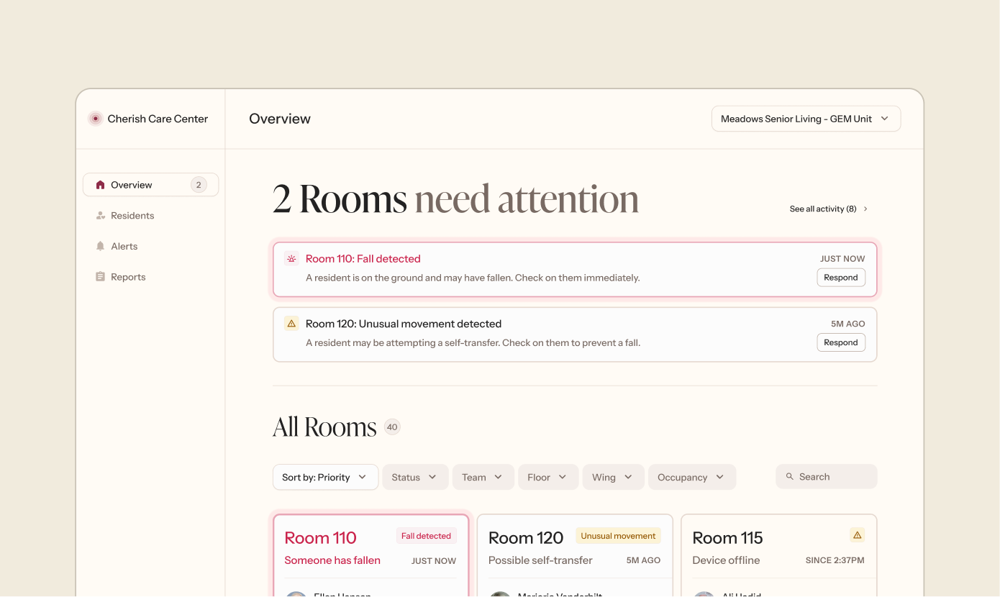

Product Designer with 3+ years of experience
Lang Delapa crafts meaningful experiences that solve complex problems with simplicity.

I worked with an early-stage startup to design a fall monitoring platform, using design research to ensure product-market fit in assisted living care facilities.
Description goes here
Description goes here
Description goes here